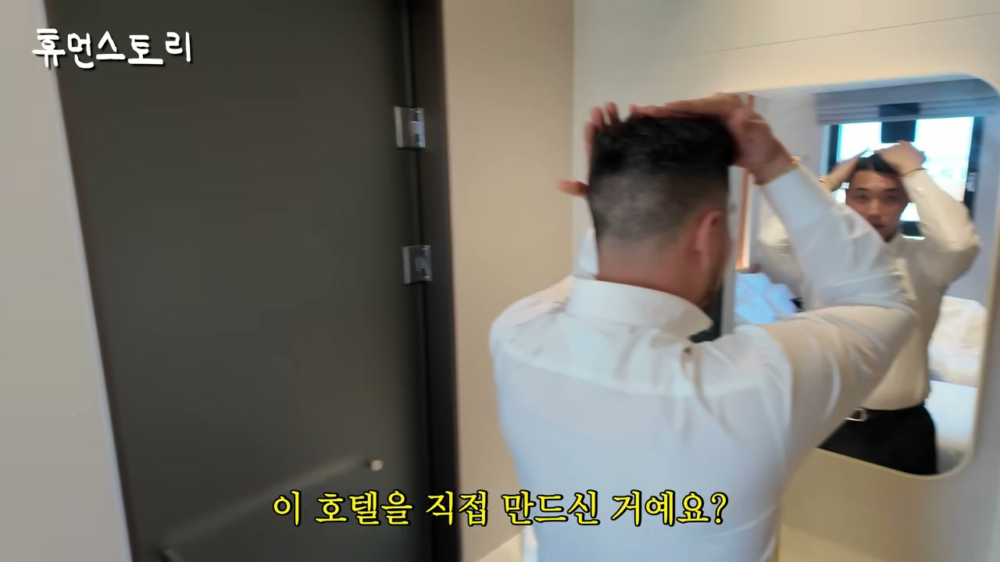
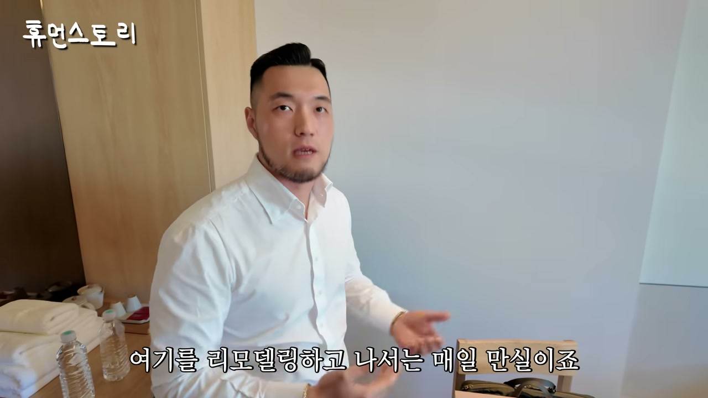
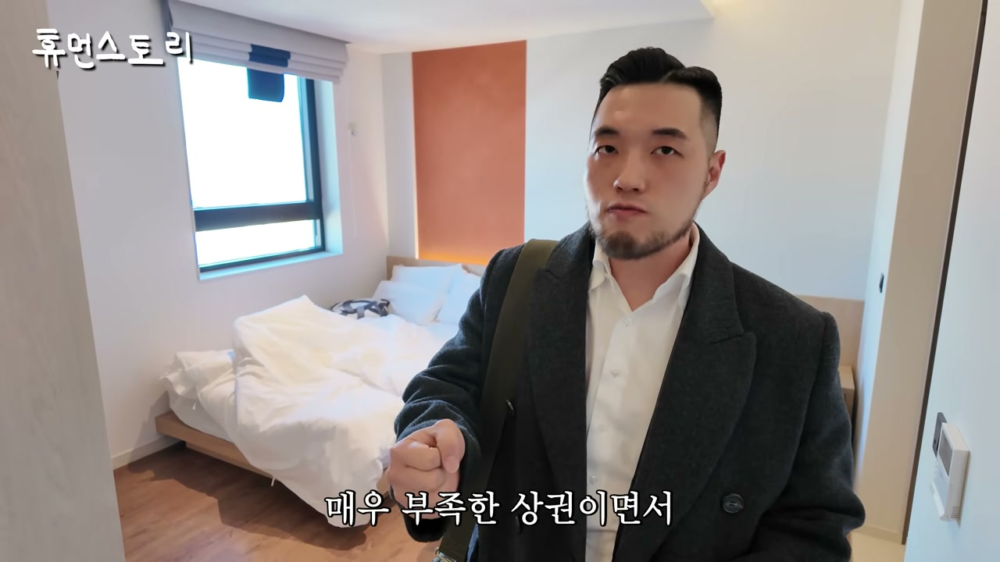
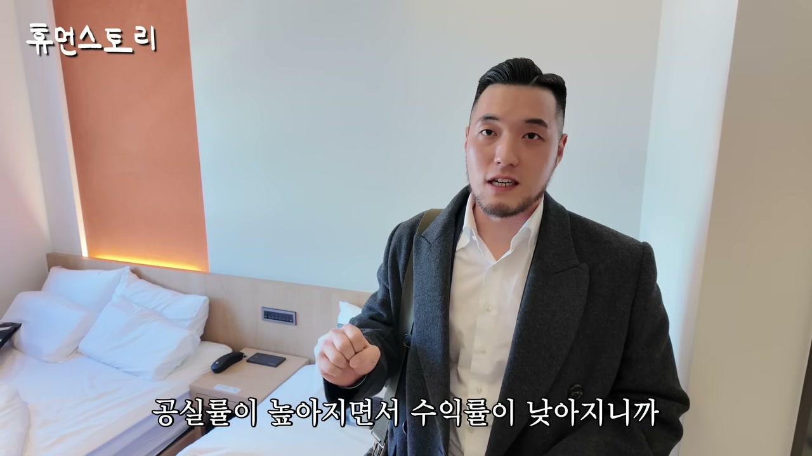
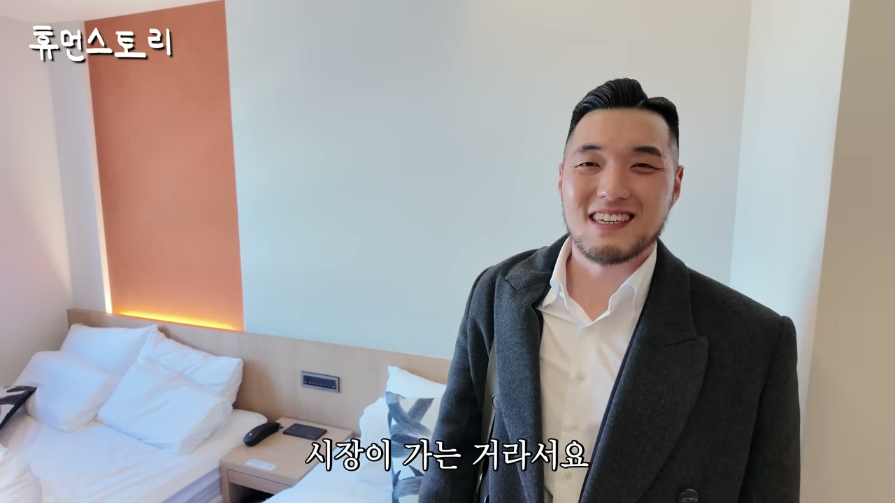
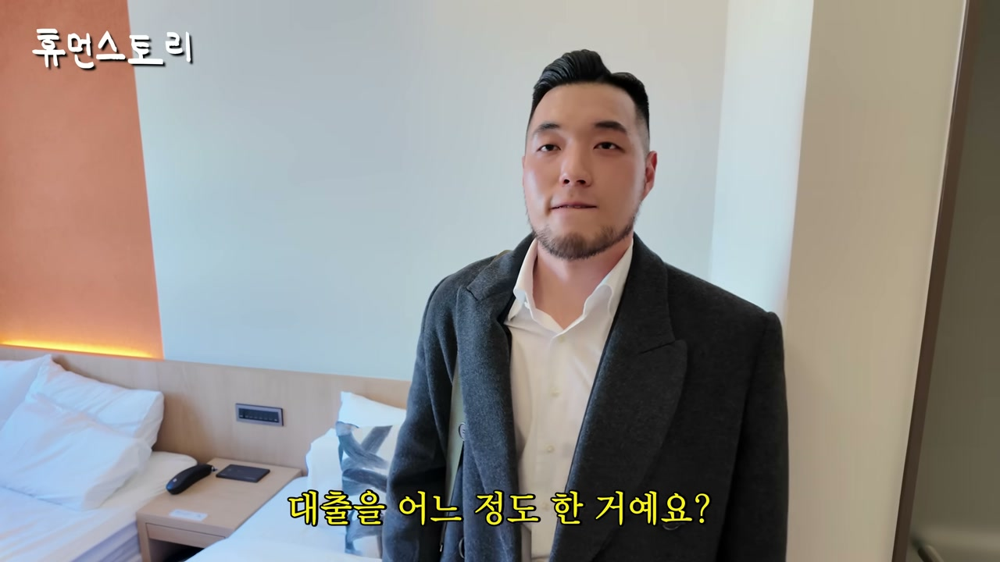
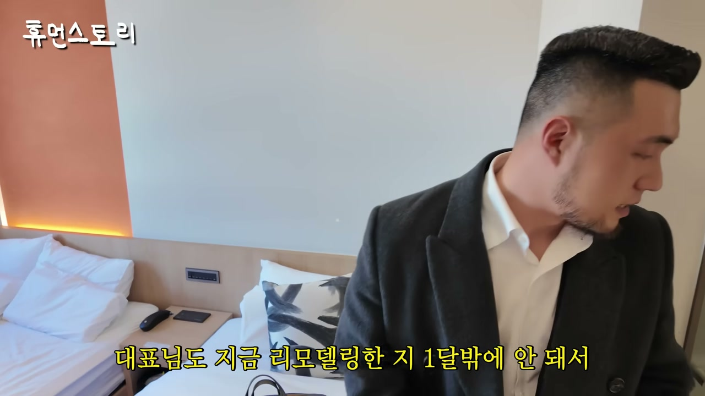
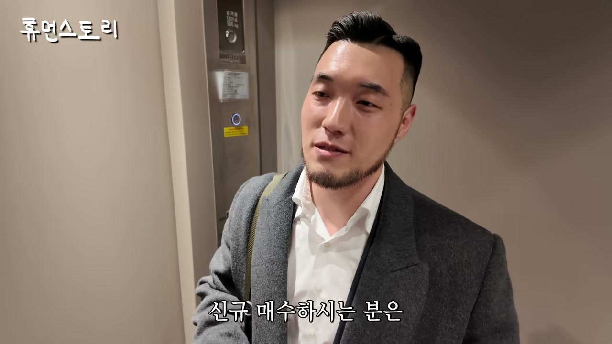
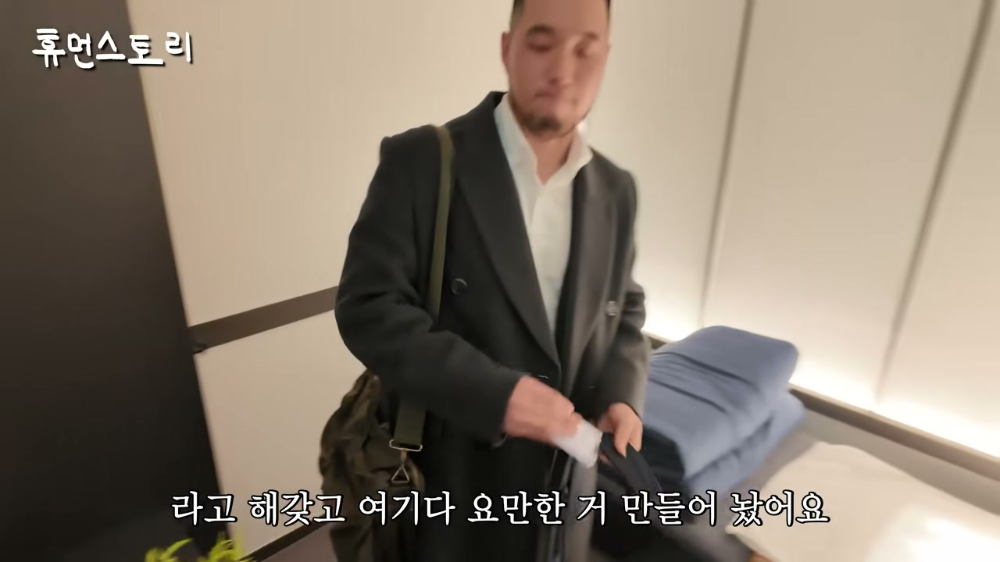
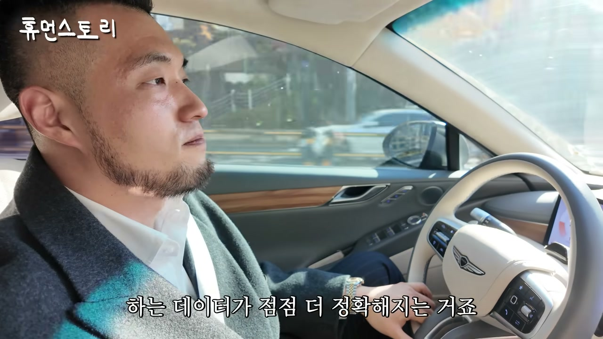

이 글은 전체 3편 중 1편입니다. 긴 영상을 주제 흐름에 맞춰 나누어 정리했습니다.
채널: 휴먼스토리 | 길이: 1:01:14 | 날짜: 2025-11-25
이 글은 전체 3편 중 1편입니다.

인터뷰는 "대표님은 모텔·호텔을 만드는 매출이 거의 700억 가까이 나온다"는 진행자의 질문으로 시작한다. 이에 대해 "모텔을 호텔처럼 바꿔서 매출이 700억 정도 나오는 것"이라는 정리가 이어지고, 대표는 "이런 낡았던 여관을 이렇게 바꾼 것"이라고 답한다. 과거에는 옆 건물과 똑같이 생겼던 여관이 지금은 완전히 일본식 료칸처럼 변모했으며, 방 안에 탕이 있고 옥상을 노천탕으로 개조했다는 사실이 확인된다. 진행자는 "이게 모텔이에요?"라며 놀라고, 대표는 오픈한 지 얼마 안 돼 직접 투숙해보는 중이며 회사와도 가까워 겸사겸사 묵는다고 설명한다. 이 장면은 낡은 숙박시설을 '경험 상품'으로 재정의하는 이 사업의 핵심 정체성을 보여준다.
대표는 "저는 모텔, 호텔 150개 정도 만들어 본 '스페이스플래닝'이라는 숙박 전문 시공사 경영하고 있는 정우석"이라고 자신을 소개한다. 150개를 만든 게 맞느냐는 질문에 "네 맞습니다, 우리나라"라고 답하며, 이 건물처럼 큰 신축 건물도 지었지만 낡은 호텔은 리모델링 시점이 오면 회사에 문의가 많이 들어온다고 밝힌다. 처음부터 모텔·호텔을 짓는 게 아니라 낡은 호텔·모텔을 예쁘게 바꾸는 것이 주력이며, 신축도 하지만 캐시카우는 모텔 리모델링이라고 명확히 말한다. '캐시카우'라는 용어에 대해 "가장 많이 매출 임팩트를 내는 사업 분야"라고 정의를 덧붙인다.

집도 있지만 직업 특성상 지방에도 많이 가고 호텔에서 굉장히 많이 잔다고 밝힌다. 자기 호텔에 직접 투숙하면 보완점을 찾을 수 있다는 것인데, 실제로 오늘 묵어보고 발견한 개선점으로 침대 헤드의 소재를 꼽는다. 우드로 한 헤드가 나쁘진 않지만 딱딱해서 TV를 보며 기대면 불편할 수 있어, 다음 모델부터는 패브릭이나 가죽으로 마감하고 폭신폭신한 소재를 덧대려고 한다고 말한다. 반면 스파는 "아주 만족스럽다"고 평가한다.
이 호텔은 건대 쪽에 있고 바로 옆에 성수가 있는데, 성수는 핫플레이스인데 호텔이 없다는 점을 포착했다. 그래서 지역 네이밍을 '성수 건대'로 함께 붙여 매일매일 만실되는 호텔이 됐다고 설명한다. 진행자가 "이 방이 매일 만실 되는 거예요?"라고 묻자 "이 호텔 전체 객실이 매일 만실"이라고 답한다. 이전에는 건물이 노후되면서 만실이 안 됐지만 리모델링 이후에는 매일 만실이며, 이런 노후 호텔·모텔을 예쁘게 만들어 손님이 많이 오게 하는 업체가 바로 자신들이라는 점을 다시 강조한다. 대표는 이 업종을 "숙박전문 시공사"라고 부른다고 밝힌다.

전국 150개는 엄청 많은 것 같지만 "우리나라 모텔이 진짜 많다"며, 모텔 수가 약 23,000개라고 밝힌다. 호텔·모텔을 가리지 않고 시공하며, 우리나라는 모텔에도 호텔 간판을 많이 붙인다고 설명한다. 업종 구분으로는 관광숙박업이냐 일반숙박업이냐로 나뉘지만, 1999년 공중위생법 제정으로 누가 봐도 모텔인데 호텔이란 간판을 쓸 수 있게 해줬다. 그래서 "호텔 아닌데 모텔 같은데?" 하는 것들도 시장에서는 모텔이라고 부르는 산업적 특징이 있다고 짚는다.
원래 신입사원 때 야놀자에서 일했으며, 그때는 야놀자에 앱도 없어 인터넷으로 쿠폰을 뽑아가면 프론트에서 할인해주던 시절이었다. 모텔 산업을 많이 배우던 중 대표에게 "저 나중에 모텔 사업을 하고 싶은데, 이 사업은 공간 사업이고 시공을 모르면 나중에 제가 호구가 될 것 같다. 시공 부서로 옮겨달라"고 직접 요청해 야놀자에서 시공을 배웠다. 이후 이지스자산운용에서 부동산 개발과 공간 운영으로 투자자에게 수익을 돌려주는 업무를 하며 공간 기획을 담당했다. 핵심 질문은 "같은 면적 안에서도 얼마나 많은 돈을 벌어내야 되냐"였고, 이 두 기술을 접목해 5년 전 스페이스플래닝을 창업했다.

원래 각각의 객실이었던 두 방을 통합해 하나의 방 크기였던 곳을 스파로 확 키운 사례를 설명한다. 따로따로 7~8만원에 판매하는 것보다 트여진 공간이면 20만원, 30만원을 내고 올 사람이 많다고 판단한 것이다. 근거는 명확하다. 여기는 호텔 공급이 매우 부족한 상권이고, 성수는 외국인 관광객의 필수 여행 코스이며, 그런 사람들은 다인 투숙이 많을 수 있다. 상권 분석이 제일 중요하며, 상권에 맞춘 기획과 룸 타입 설계, 그리고 전체 호텔에서 '가장 엣지가 되는 부분'을 무엇으로 선정할지가 매우매우 중요하다고 강조한다. 실제로 이 객실은 평일 23만원, 주말 3~40만원대이며 매일 만실이고, 객실 수는 50개가 넘는다.
모텔은 5년에 한 번 부분 리모델링, 10년에 한 번 전체 리모델링이 필요하다고 설명한다. 이를 단순 계산하면 매년 4,000개씩 리모델링 수요가 나온다는 결론이 된다. 5년 동안 150개밖에 못 했으니, 계산상 평생 다 하지도 못할 규모라는 이야기가 나온다. 즉 "이 시장이 굉장히 크다"는 것이 이 섹션의 핵심이다.

네이버에 '모텔 전문 시공사'로 검색하면 자기 회사밖에 안 뜬다고 말하며, 이는 우리나라에 이런 회사가 거의 없다는 뜻이라고 밝힌다. 이어 우리나라 카페가 10만 개인데 모텔이 23,000개면 1/4 시장이지만, 카페 인테리어 업체는 엄청 많은 반면 모텔 인테리어 회사는 처음 들어본다는 점을 지적한다. 그래서 자신들은 이 산업을 블루오션으로 본다고 말한다.
과거엔 기존 모텔업자들이 추가로 계속 했지만, 약 5년 전부터 숙박업 콘텐츠가 많아지면서 다른 산업 종사자, 꼬마빌딩 투자자, 아파트 투자자들이 모텔로 들어오고 있다. 이유로는 첫째, 아파트는 세금 때문에 투자를 늘리기 부담스러운 대상이 됐고, 둘째, 근린생활시설은 공실률이 높아지며 수익률이 낮아져 대체 상품을 찾게 됐다는 점을 든다. 반면 모텔은 월세가 아닌 일세(日貰) 비즈니스이므로 운영만 잘 된다는 가정 하에 매출이 훨씬 높고, 비용도 많아지지만 이익 구간도 커진다. 꼬마빌딩 투자의 목적이 땅의 가치를 계속 가져가기 위함이듯, 모텔도 100평 정도 대지를 가진 건물을 계속 보유하는 것이며 운영만 잘되면 리스크가 훨씬 적다고 판단하는 사람이 늘고 있다.

운영을 한 번도 안 해본 사람들도 있어서 대표가 직접 운영법을 알려주고, 최근에는 위탁 운영 트렌드가 생겼다. 위탁 운영은 호텔 운영 전문가에게 운영을 맡기는 것으로, 임차와 비슷하지만 보증금이 없어 임차인이 아니므로 임대차보호법 보호를 받지 않는다. 따라서 호텔이 다른 사람에게 잘 매각됐을 때 명도 이슈 없이 위탁운영사가 매각을 도와주는 구조적 이점이 있다. 모텔 주인 입장에서는 누군가가 대신 운영해주는 것이며, 수수료를 주고 보통 건물주가 직접 운영하는 것보다 훨씬 가성비가 좋다고 설명한다.
이 시장에는 리모델링 평균가가 있는데, 실당 3,500만원이다. 실은 객실을 의미하며, 20객실이면 약 7억이 든다. 가장 흔한 규모는 30객실이라고 밝힌다. 전체 리모델링이 필요한 낡은 모텔 기준이며, 실제로는 건물 사이즈에 따라 많이 다르다. 모텔의 99%는 일반상업지 안에 있고, 신축은 거의 없으며 기존 건물을 이어서 계속 리모델링하며 시장이 간다고 설명한다. 23,000개가 그 안에서 계속 리모델링되므로 공급이 새로 되지 않는다는 점이 중요하다. 이 호텔(건대)은 스파가 크기 때문에 실당 3,000만원대 후반이 들었으며, 객실뿐 아니라 복도, 로비, 지하 공용부, 외관 등 여러 공사 항목을 전부 객실 수로 나눠 계산한다고 밝힌다.
성신여대 상권에 22객실짜리 아주 낡은 좁은 여관을 리모델링한 사례가 소개된다. 이곳은 현재 월 매출 9,000만원이 나온다. 22객실이 9,000만원이면 실당 약 450만원을 버는 것이고, 하루 평균 10만원 이상으로 매일매일 판다는 계산이 나온다. 리모델링 투자는 실당 3,500만원 수준으로 유사하게 이뤄졌다.
9,000만원 매출에서 약 3,000만원이 운영비로 나간다. 항목은 프론트 직원과 청소 직원 인건비, 전기·가스·수도 등 공과금, 옷·베개 등 세탁 비용, 매일 제공하는 어메니티 등이며, 이 비중이 약 30% 정도다. 모텔은 목욕을 많이 하는 호텔이므로 수도 요금보다 가스 요금(난방·온수)이 더 많이 나가고 겨울에 특히 많이 나간다. 순수익 6,000만원에서 금융 이자를 내야 하는데, 모텔은 모텔 가격만큼 대출이 나온다고 설명한다. 15억짜리 모텔을 사면 거의 15억이 나온다는 것이다. 은행이 리모델링 후 매출·수익 계획을 사업으로 읽어주고, 건물 담보 가치의 70~80%, 지역 LTV 비율에 맞춰 대출을 해준다.
부동산을 매수하면 중개수수료가 들고, 잔금 이후부터 공사가 시작된다. 따라서 공사가 진행되는 약 3개월 동안의 금융 이자, 법무사 비용, 취득세 등만 시공비와 함께 준비하면 모텔을 창업할 수 있다. 즉 부동산 매수가는 대출로 충당되고 자기자본은 시공비와 부대비용인 구조라는 점이 강조된다.

10억짜리 부동산을 매수해 PF 대출을 받으면 연 6.5% 기준 연 이자 6,500만원, 월 약 600만원이다. 20억이면 월 1,200만원이 된다. 성신여대점은 9,000만원 매출에서 운영비 3,000만원, 이자 600만원을 제외하면 나머지가 수익이며 세금만 내면 된다. 매가가 더 높으면 이자도 올라가지만 큰 차이는 없다며 "굉장히 높은 수익률"이라고 평가한다.
이 호텔은 월 매출 2억까지 나오며, 50객실이고 위치가 좋아 무조건 2억을 넘긴다. 오픈한 지 1달밖에 안 됐으므로 3~4개월 자리를 잡으면 2억 중반까지 갈 것이라고 전망한다. 보통 22~25객실당 매출 1억 정도가 나오는 시스템을 만들고 있으며, 이는 상권이 좋아야 가능하다고 단서를 붙인다.
20객실이 7,000만원 매출을 내도 매우 좋은 투자라고 평가한다. 운영이 잘된다는 가정 하에 이 수익률을 따라올 부동산이 없다고 강조한다. 부동산 투자자들이 모텔로 몰리는 이유는 모텔이 잘되면 땅값도 건물값도 오르기 때문이다. 5~6년 현금흐름을 끌고 가면 지가가 올라 있고, 그 땅의 가치로도 매각할 수 있어 운영이익과 매각 차액을 동시에 노릴 수 있는 수익형 부동산이 된다는 것이 핵심 논리다.

'모텔 강의'란 무엇인지 묻는 질문에, 모텔을 하려면 땅을 잘 사야 하므로 부동산 지식이 필요하다고 답한다. 모텔을 잘 매수하고, 공간을 기획하고 시공·리모델링하고, 개인이 운영할지 위탁 운영사를 줄지 결정하며, 위탁을 맡길 때 조심할 점, 마케팅 방법 등을 알려준다는 것이다.
이 건물은 전체 리모델링이 이뤄졌고, 이전 모텔 주인은 개인 사정으로 매각했다. 대표는 그분이 왜 팔았는지는 모르지만 새 매수자가 왜 샀는지는 안다고 밝히며, 부동산 투자 가치가 있는 상권이고 호텔 공급이 적은 상권이므로 이 정도 땅을 소유·보유하는 것은 의미가 있다고 판단했을 것이라고 설명한다. "매출이 오를 거면 차라리 안 팔고 리모델링해서 계속 매출을 올리는 게 훨씬 이득 아닌가"라는 질문에는 개인의 투자 판단이며, 지금 매각하는 게 나을 수도 있고 재투자해 몇 년간 지가 상승을 노릴 수도 있다고 답한다.

호텔 이름은 '아늑'이며 대표가 만든 브랜드다. 누워 있으면 자동으로 살이 빠지고 숙면할 수 있는 온열 기계가 있어 비용을 내고 이용하며, 투숙객은 패키지로 연결돼 있기도 하고 현장에서 따로 이용할 수도 있다. 여기는 스파호텔이자 웰니스 경험을 할 수 있는 웰니스 호텔이다. 웰니스는 "내가 건강해지고 몸이 좋아지기 위해 능동적으로 뭔가 활동하는 것"을 통합해 부르는 말로, 호텔 컨셉은 스파와 힐링을 결합한 것이다. 배후 세대가 많아 여성 인구가 많고 강남과도 가까워 자기 몸을 가꾸고 관리하고 싶은 사람이 많은 상권이라는 판단에서, 30평 공간을 헬스장으로 만드는 것보다 온열 기계를 두는 것이 투숙객 경험에 더 좋고 그 자체로도 사업이 될 수 있다고 봤다. 원래 인테리어 비용이 더 들어갈 부분을 마감을 심플·간소하게 하고 기계 비용에 더 투자했다.
대표는 호텔·모텔 창업도 결국 아이디어이며, 차별화 포인트를 어떻게 만드는지가 되게 중요하다고 강조한다. 이후 오픈 직전인 안산 현장으로 이동해 잘못된 부분이 없는지 점검하며, 종일 호텔·모텔을 짓고 리모델링하고 현장을 보고 인테리어하고 미팅하며 어떻게 만들지 결정하는 일을 한다고 설명한다.
아늑과 연계해 약 20종 브랜드가 있고, 주력은 아늑이며 '패스포트'라는 브랜드도 있다고 밝힌다. 5년간 사업했고 야놀자까지 포함하면 10년이 넘었으며, 대표 나이는 37살이다.

상권 분석은 크게 정량적 데이터와 정성적 판단을 결합한다. 오픈소스 데이터로 온라인에 공개된 상권 유동인구, 카드사 데이터(어디서 얼마를 쓰는지) 등을 본다. 가장 중요한 것은 소비자 시각으로 바꿔놓고 기획을 시작하는 것이다. 예를 들어 건대에 호텔을 만들기 전에 야놀자나 여기어때에서 건대를 검색해 "네가 진짜 가고 싶은 호텔을 골라, 그러면 그 이유가 뭔지 다 정리해, 그래서 거기가 우리 라이벌이야, 그러면 그 호텔보다 우리가 뭘 갖춰야 되는지 판단해"라는 방식이다. 여기에 150개 호텔을 만들며 축적한 매출 데이터로 "어느 지역에서 어디 호텔을 어떻게 리모델링하면 매출이 어느 정도 나온다"는 예측 정확도를 높인다. 정량 데이터 + 정성적 소비자 시각이 모여 "무엇을 만들어야 하는지"를 뾰족하게 만든다는 것이 핵심이다.
호텔 150개는 연 30개, 월 약 3개를 만드는 셈이며 "엄청 많이 만드는 것"이라고 평가받는다. 월 3개는 생각보다 공수가 많이 들어가는 일이며, 최대로 동시에 60개를 만들고 있다고 밝힌다. 지어지고 있는 것을 포함해 150개 정도가 됐고, 설계 중인 것부터 만들고 있는 것까지 합치면 현재 60개 정도를 동시에 진행 중이라고 설명한다.
"저는 모텔, 호텔 150개 정도 만들어 본 '스페이스플래닝'이라는 숙박 전문 시공사 경영하고 있는 정우석이라고 합니다."
"신축도 하는데 저희의 캐시카우는 모텔을 리모델링하는 거예요."
"대표님, 저 나중에 모텔 사업을 하고 싶은데 가만 보니까 이 사업은 공간 사업이고 시공을 모르면 제가 나중에 호구가 될 거 같습니다. 시공 부서로 옮겨주십시오."
"성수는 핫 플레이스잖아요. 성수에 호텔이 없거든요."
"그래서 여기는 지역 네이밍도 성수 건대 이렇게 같이 붙이게 넣어가지고 지금 매일매일 만실되는 그런 호텔이고요."
"5년에 한 번씩은 부분 리모델링을 해줘야 될 거고, 10년에 한 번은 이렇게 전체 리모델링을 보통은 해요. 그럼 5년에 하나씩 리모델링 하는 데가 생긴다라고 하면 연간 4,000개씩은 나오는 거예요."
"카페가 10만 개인데 모텔이 23,000개면 1/4 시장이잖아요. 카페 인테리어 업체 하면 엄청 많잖아요. 근데 모텔 인테리어 회사는 처음 들어보셨잖아요. 그래서 저는 이 산업을 저희 입장에서도 블루오션이라고 생각하고."
"모텔 같은 경우는 일세를 받는 비즈니스거든요. 월세가 아니고. 그러니까 운영이 잘 된다는 가정만 있으면 매출은 훨씬 더 높을 수밖에 없는 거고."
"그냥 매각을 하는 게 나을 수도 있고 여기다 재투자를 해가지고 또 몇 년간의 지가 상승을 노려보겠다 하는 개인 판단인 거 같아요."
"무조건 아이디어고 차별화 포인트를 어떻게 만드는지가 되게 중요해요."
"야놀자나 여기어때에서 건대를 쳐봐. 네가 진짜 가고 싶은 호텔을 골라. 그러면 그 이유가 뭔지를 다 정리해. 그래서 거기가 우리 라이벌이야. 그러면 그 호텔보다 우리가 뭘 갖춰야 되는지를 판단해. 그게 출발이에요."
이 파트(1/3)는 정우석 대표가 어떻게 야놀자 신입사원에서 출발해 이지스자산운용을 거쳐 5년 만에 150개의 숙박시설을 시공하는 숙박 전문 시공사 '스페이스플래닝'을 만들었는지를 다룬다. 핵심 메시지는 크게 세 가지다.
첫째, 틈새시장으로 보였던 모텔 리모델링이 사실 거대한 시장이라는 점이다. 한국에 모텔이 23,000개 있고 5~10년 주기로 리모델링이 필요해 연 4,000개 규모의 수요가 발생하는데, '모텔 전문 시공사'는 극히 드물다. 카페 10만 개 시장에 인테리어 업체가 즐비한 것과 정반대의 구조로서 이는 명확한 블루오션이다.
둘째, 경험과 데이터가 곧 경쟁력이라는 점이다. 대표는 야놀자에서 모텔 산업을 배우고, 스스로 시공 부서로 옮겨 기술을 익혔으며, 이지스자산운용에서 공간 수익성 기획을 익혀 두 기술을 접목했다. 150개 시공을 하며 축적한 매출 데이터로 상권별 매출을 예측하고, 소비자 시각으로 경쟁 호텔을 분석해 차별화 포인트를 뾰족하게 만든다.
셋째, 모텔이 새로운 수익형 부동산으로 재평가되고 있다는 점이다. 아파트 세금 부담, 근린생활시설 공실률 상승으로 대체 투자처를 찾던 자본이 일세 비즈니스인 모텔로 몰리고 있다. 대출 구조상 부동산 매수가는 LTV 70~80% PF 대출로 충당되고 자기자본은 시공비와 부대비용만 있으면 되며, 운영이익과 지가 상승에 따른 매각 차익을 동시에 노릴 수 있다. 성신여대 22객실 사례(월 매출 9,000만원, 순수익 6,000만원 수준)처럼 운영만 잘되면 이자·세금을 제외한 대부분이 수익으로 남는다는 구조가 이러한 자본 유입을 뒷받침한다.
다음 2편에서는 안산 오픈 직전 현장 점검, 실제 창업·운영의 어려움, 위탁 운영의 실무적 주의점, 그리고 대표가 강의에서 전하는 구체적 노하우가 이어질 것으로 예상된다.
댓글
GitHub 이슈 기반 댓글 시스템입니다.